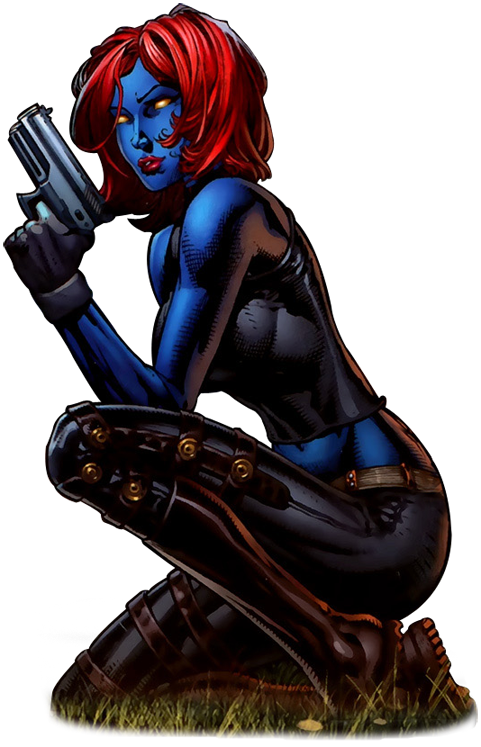

MISTICA
Mística é capaz de formar membros extras, criar asas, tentáculos, aumentar sua massa muscular, e até mesmo formar um segundo rosto na parte de trás de sua cabeça para agir como um vigia. Ela esclarece que quando faz isso, é essencialmente uma forma de batalha que não é fácil de manter por longos períodos de tempo.Capitão América é um super-herói de histórias em quadrinhos americanos publicado pela Marvel Comics. Criado por Joe Simon e Jack Kirby, o primeiro personagem apareceu em Captain America Comics # 1 da Timely Comics, antecessora da Marvel Comics.